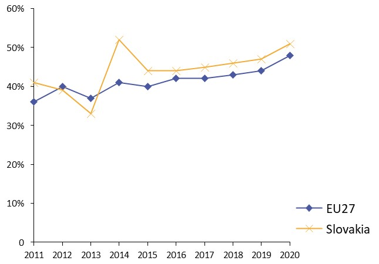
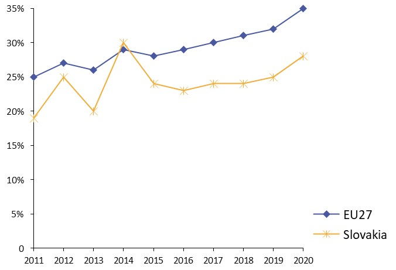
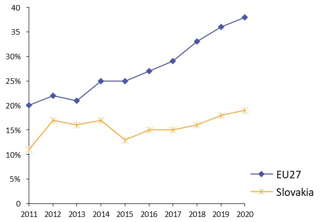

Digital Public Administration factsheet 2021
Slovakia
Digital Public Administration factsheet 2021
Table of Contents
2 Digital Public Administration Highlights 10
3 Digital Public Administration Political Communications 12
4 Digital Public Administration Legislation 19
5 Digital Public Administration Governance 26
6 Digital Public Administration Infrastructure 34
7 Cross-border Digital Public Administration Services 41
Please note that the data collection exercise for the update of the 2021 edition of the Digital Public Administration factsheets took place between March and June 2021. Therefore, the information contained in this document reflects this specific timeframe.
Country
Profile
1
Country Profile
Basic data
Population: 5 458 827 inhabitants (2020)
GDP at market prices: 91 555.3 (2020)
GDP per inhabitant in PPS (Purchasing Power Standard EU 27=100): 71 (2020)
GDP growth rate: -4.8 % (2020)
Inflation rate: 2 % (2020)
Unemployment rate: 6.7 % (2020)
General government gross debt (Percentage of GDP): 60.6 (2020)
General government deficit/surplus (Percentage of GDP): -6.2 (2020)
Area: 49 036 km²
Capital city: Bratislava
Official EU language: Slovak
Currency: Euro (EUR)
Source: Eurostat (last update: 19 July 2021)
Digital Public Administration Indicators
The following graphs present data for the latest Digital Public Administration Indicators for Slovakia compared to the EU average. Statistical indicators in this section reflect those of Eurostat at the time the factsheet is being prepared.
Percentage of individuals using the internet for interacting with public authorities in Slovakia | Percentage of individuals using the internet for obtaining information from public authorities in Slovakia |
 |  |
Percentage of individuals using the internet for downloading official forms from public authorities in Slovakia | Percentage of individuals using the internet for sending filled forms to public authorities in Slovakia |
|  |  |
Interoperability State of Play
In 2017, the European Commission published the European Interoperability Framework (EIF) to give specific guidance on how to set up interoperable digital public services through a set of 47 recommendations. The picture below represents the three pillars of the EIF around which the EIF Monitoring Mechanism was built to evaluate the level of implementation of the EIF within the Member States. It is based on a set of 71 Key Performance Indicators (KPIs) clustered within the three main pillars of the EIF (Principles, Layers and Conceptual model), outlined below.
Source: European Interoperability Framework Monitoring Mechanism 2020
Source: European Interoperability Framework Monitoring Mechanism 2020
Source: European Interoperability Framework Monitoring Mechanism 2020
Source: European Interoperability Framework Monitoring Mechanism 2020
eGovernment State of Play
The graph below presents the main highlights of the latest eGovernment Benchmark Report, an assessment of eGovernment services in 36 countries: the 27 European Union Member States, as well as Iceland, Norway, Montenegro, the Republic of Serbia, Switzerland, Turkey, the United Kingdom, Albania and Macedonia (referred to as the EU27+).
The study evaluates online public services on four dimensions:
- User centricity: indicates the extent to which a service is provided online, its mobile friendliness and its usability (in terms of available online support and feedback mechanisms).
- Transparency: indicates the extent to which governments are transparent about (i) the process of service delivery, (ii) policy making and digital service design processes and (iii) the personal data processed in public services.
- Cross-border services: indicates the extent to which users of public services from another European country can use the online services.
- Key enablers: indicates the extent to which technical and organizational pre-conditions for eGovernment service provision are in place, such as electronic identification and authentic sources.
The 2021 report presents the biennial results, achieved over the past two years of measurement of all eight life events used to measure the above-mentioned key dimensions. More specifically, these life events are divided between six ‘Citizen life events’ (Career, Studying, Family life, measured in 2020, and Starting a small claim procedure, Moving, Owning a car, all measured in 2019) and two ‘Business life events’ (Business start-up, measured in 2020, and Regular business operations, measured in 2019).

Source: eGovernment Benchmark Report 2021 Country Factsheets
Digital Public Administration Highlights
2
Digital Public Administration Highlights
Digital Public Administration Political Communications
The National Cybersecurity Strategy 2021-2025 was prepared by the National Security Authority of the Slovak Republic and it takes into account principles listed in the Slovak Security Strategy and strategies of the EU, NATO, OECD and UN. Building on the cybersecurity strategy that covered the period of 2015-2020, the strategic goals aim to serve the interests of the state and protect the services provided to citizens and businesses.
Digital Public Administration Legislation
As of 1 May 2019, a new Act No. 95/2019 on Information Technologies in Public Sector entered into force replacing former Act 275/2006 on information systems in public administration. The new Act brought a systemic change in the management of IT in the public sector. Respective public bodies charged with the IT management were given more responsibilities within the whole project cycle of IT implementation – planning, procurement, implementation, monitoring and evaluation. The Ministry of Investments, Regional Development and Informatisation of the Slovak Republic has started the preparation of the executive regulations to this Act.
Digital Public Administration Governance
In July 2020, the Deputy Prime Minister Office for Investments, Regional Development and Informatisation of the Slovak Republic has been transformed into the Ministry of Investments, Regional Development and Informatisation of the Slovak Republic. The main tasks of the Ministry among others are to create and implement a uniform state policy towards EU funds, to perform tasks that stem from the membership of the Slovak Republic in international organisations, to be an intermediary body for management of the Operational Programme ‘Integrated Infrastructure’ (OPII), Priority Axis 7 and the Digital Single Market policy’ (OPII), Priority Axis 7 and the Digital Single Market policy.
Digital Public Administration Infrastructure
Since December 2020, the government portal slovensko.sk serves also as a Single Digital Gateway according to the Regulation No 2018/1724. It contains the information part in Slovak and in English language, which can be found in the ‘Life events’ section. Currently, the information content is continuously updated according to legislative changes and reports of individual ministries (coordinators). Life events’ section. Currently, the information content is continuously updated according to legislative changes and reports of individual ministries (coordinators).
In the third quarter of 2020, the Ministry of Investment, Regional Development and Informatization of the Slovak Republic in cooperation with the Ministry of Economy of the Slovak Republic prepared a national competition for the selection of European Centers for Digital Innovation (ECDI). During April and May 2021, a second round of competition started.
Digital Public Administration Political Communications
3
Digital Public Administration Political Communications
Specific political communications on digital public administration
Berlin Declaration on Digital Society and Value-Based Digital Government
In December 2020, the Slovak government signed the Berlin Declaration on Digital Society and Value-Based Digital Government, thus re-affirming its commitment – together with other EU Member States – to foster digital transformation in order to allow citizens and businesses to harness the benefits and opportunities offered by modern digital technologies. The Declaration aims to contribute to a value-based digital transformation by addressing and strengthening digital participation and digital inclusion in European societies.
The strategy followed up on the priorities of the EU Digital Single Market. At the national level, it accelerated ongoing processes in terms of building the digital market and carrying out various measures that arose from the most recent cross-sectoral policies of the EU. The strategy also reflected the strategic materials and recommendations of international organisations (EU, OECD, UN, G7 and G20) that consider digital transformation to be the key to inclusive and sustainable growth. The strategy puts emphasis on new digital technologies such as artificial intelligence, Internet of Things, 5G technology, big data and analytical processing of data, blockchain or high-performance computers, which will eventually become a new engine of economic growth and competitiveness.
Several areas were identified regarding the necessity to multiply the potential of digital transformation:
- Economy;
- Society and education;
- Public services;
- Rural development; and
- Science, research and innovation.
The targets of the process are the citizens, whose everyday life should get simpler, and entrepreneurs, whose businesses should be supported by various incentives and whose bureaucratic burdens should be eliminated.
- Improvement of education and fostering digital skills and employment for the modern era;
- Creation of a basis for a modern digital economy;
- Improvement of the ability of public services to innovate and use data; and
- Development and practical implementation of artificial intelligence.
As for the digital government, the ambition is to launch and implement a “data-driven State” concept in the public administration. The aim of the concept is for public administration to adopt decisions based on its best available knowledge. It is necessary to make sure that the institutions know how to use real data and make data-based (and possibly automated) decisions. Transforming the functioning of public administration organisations and processes is also key, so that such analyses can be effectively used. The action plan also proposes the continuous deployment of fully automated public administration services. This would imply that the system would handle filings automatically based on selected criteria.
2015-2020 National eGovernment Concept
The National eGovernment Concept, which was approved by the Slovak government in September 2016, defined the strategic Enterprise Architecture of eGovernment and its central coordination, and also the principles and objectives of further development in accordance with the goals stated in the Strategic Document for Digital Growth and Next Generation Access Infrastructure. This document represented a new approach to informatisation with special emphasis on achieving openness, fair competition, and increasing the value of IT in key functions of public administration, whether through improved services, better data-based decisions, better regulation, or more efficient operation. This document represented a new approach to informatisation with special emphasis on achieving openness, fair competition, and increasing the value of IT in key functions of public administration, whether through improved services, better data-based decisions, better regulation, or more efficient operation. This strategy will be soon replaced by the new National eGovernment Concept.
National eGovernment Concept 2030
The National eGovernment Concept 2030 concerns all elements of public administration. It formulates a set of strategic goals, priorities and measures which aim is to create a central architecture at the national level and to define policy, regulatory and other tools in order to build a controlled and effective level of informatisation in public administration. It also contains a new systemic plan for the preparation and implementation of the intended goals.
2014-2020 Operational Programme ‘Integrated Infrastructure’
The Operational Programme ‘Integrated Infrastructure’ (OPII) is a strategic document developed for the absorption of EU funds in the transport sector and in the area of enhancing access, use and quality of information technologies. The overall focus of the OPII, its specific objectives and activities were set to ensure the fulfilment of the Europe 2020 Strategy priorities and the National Reform Programme of the Slovak Republic.
The overall objective of the OPII was to support sustainable mobility, economic growth, job creation while improving the business climate through the development of transport infrastructure, public transport and information society.
The Ministry of Investments, Regional Development and Informatisation of the Slovak Republic is responsible for the area of information society within the Operational Programme ‘Integrated Infrastructure’. Other objectives of the operational programme were managed by the Ministry of Transport, Construction and Regional Development to support sustainable mobility, economic growth, job creation and improve the business environment through the development of transport infrastructure.
The Ministry of Investments, Regional Development and Informatisation of the Slovak Republic acts as an intermediary body responsible for Priority Axis 7 - Information Society. The funds were invested in the development of electronic services for citizens and businesses, suited to complex life events and cross-border interoperability, and aimed at increasing the availability of government data through open data. At the same time, the public administration reform was supported by ICT, including the further expansion of the government cloud. Finally, the allocation for Priority Axis 7 should ensure coverage of all households with broadband internet at a minimum speed of 30 mbps.
Strategic Document for Digital Growth and Next Generation Access Infrastructure (2014–2020)
- Services for citizens and businesses;
- Effective public administration; and
- Broadband/Next Generation Network.
The document served as a basis for the preparation of the Operational Programme ‘Integrated Infrastructure’ (Priority Axis - Information Society) for the 2014-2020 period.
The document was approved by the government of the Slovak Republic on 8 January 2014. A new version of this document for 2021-2027 is currently under preparation.
Proposal for the ESIF Programming Period 2021–2027
Negotiations for the new programming period began in early 2020. The Ministry of Investments, Regional Development and Informatisation of the Slovak Republic proposed a follow-up strategy based on the current investments. The strategy had a higher focus on reducing bureaucracy for businesses and citizens, and the objective of speeding up the digital take-up with digital-by-default services. Moreover, it can be used to support data-driven governance, with more public sector data available, building the digital government structure as a platform based on open APIs. It will also increase the quality of public services thanks to continued feedback from the users.
The partnership agreement proposal released in December of 2020 includes policy objectives aligned with the government digitalisation through the development of the digital and data economy, the modernisation of public services, and the creation of smart regions and cities.
Interoperability
New National eGovernment Concept 2030
Key enablers
Access to public information
Action Plan for the Open Governance Initiative
The Action Plan for the Open Governance Initiative in the Slovak Republic for the years 2020-2021 has been approved by Resolution of the Government of the Slovak Republic No. 553/2019. Its aim is to give access to data owned by the State in a machine-readable format licensed for further use.
eID and Trust Services
New National eGovernment Concept 2030
The New National eGovernment Concept 2030, which is currently under preparation, operates with the concept of eID as one of the key enablers for government services.
Security aspects
National Cybersecurity Strategy 2021-2025
The National Cybersecurity Strategy for 2021-2025 was approved by the government in January 2021. It was prepared by the National Security Authority of the Slovak Republic and it takes into account the principles listed in the Security Strategy and EU, NATO, OECD and UN strategies. Building on the cybersecurity strategy for the period 2015-2020, the strategic goals aim to serve the interests of the State and protect the services provided to citizens and businesses. Six principles are defined for the cybersecurity system:
- The primacy of fundamental human rights and freedom in the cyberspace;
- Legal-based cybersecurity in the management system and mechanisms of the security system;
- A comprehensive and universal approach to cybersecurity;
- Risk management as a key element of the national cybersecurity management system;
- Support, cooperation and prevention; and
- Continuous capacity building in the field of the cybersecurity.
The national cybersecurity strategy for 2021-2025 pursues seven high-level (strategic) goals:
1. A reliable State prepared for threats;
2. Effective detection and clarification of cybercrime;
3. A resilient private sector;
4. Cyber security as an essential part of public administration;
5. Strong partnerships;
6. Educated professionals and an educated public; and
7. Research and development in the field of cyber security.
The Action Plan for the implementation of the National Cybersecurity Strategy for 2021-2025 is under preparation and is foreseen to be released in May/June 2021.
Interconnection of base registries
New National eGovernment Concept 2030
One of the aims of the New National eGovernment Concept 2030, which is currently under preparation, is to achieve the interconnection of public administration information systems and reference registers. The efficient interconnection of systems will allow to merge related services while minimising user interactions or the need for manual data entry.
eProcurement
IT Procurement in the Public Administration
In May 2019, the Council for Digitalisation and the Digital Single Market of the Government of the Slovak Republic adopted the Concept for IT Procurement in the Public Administration. This concept is the result of the multi-stakeholder working group on ICT public procurement.
Domain-specific political communications
Proposal for the Centralisation and Development of Data Centres in the State Administration
The Government of the Slovak Republic approved a Data Centre Strategy, whose main goal was to centralise the number of data centres of the State into just two facilities, under the scope of the Ministry of Finance and the Ministry of the Interior in 2014. The cloud services in the scope included, for example, IaaS, PaaS, SaaS, and benefited from high levels of quality and safety in the form of catalogue services.
A new National eGovernment Concept 2030 is currently being prepared. It will also include a section on data centres and replace this strategy.
Implementation Plan of the Research and Innovation Strategy for Smart Specialisation of the Slovak Republic (‘RIS3 IP’)
Emerging Technologies
- Artificial Intelligence and blockchain, which are key to use the most revolutionary current technologies and find enough use for them (in view of exporting services);
- Data and privacy protection, necessary for creating a functioning base for a vibrant data economy where consumer rights are safeguarded;
- High-performance computing; getting access to high-performance computing and storage capacity that also efficiently uses resources is the cornerstone of success in the digital era. The age of quantum technologies is approaching – quantum computers, quantum cryptography and quantum sensors as part of the IoT will become the decisive technologies in the new IT age;
- Next-generation fixed and mobile networks will allow Slovakia to get access to high-speed broadband connection, extension of NGA technologies in order to transfer data quickly and seamlessly. Subsequently, it will be necessary to build 5G networks to support autonomous and connected mobility and smart transport systems with expected massive utilisation in the future; and
- Internet of Things (IoT), in particular in the context of education. In fact, various primary and secondary school and university curricula in Slovakia have already been extended with matters concerning IoT, thanks to which Slovak students have excellent results in IoT and robotics.
- Support to activities of the Digital Coalition;
- Support to setting up and connecting DIHs in Slovakia;
- Support to setting up and operating a platform for research on and use of Artificial Intelligence;
- Support to setting up and operating the platform for research on and use of the blockchain technology;
- Support to setting up and operating a national high-performance computing competence centre; and
- Support to setting up and operating the national competence and coordination centre for cybersecurity.
Digital Public Administration Legislation
4
Digital Public Administration Legislation
Specific legislation on digital public administration
Information Technologies in the Public Sector Act No. 95/2019
The Information Technologies in the Public Sector Act No. 95/2019 came into force on 1 May 2019. This legislation replaced the previous Act No. 275/2006 and introduced a systemic change in the management of IT in the public administration by regulating the complete lifecycle of IT governance. It also extended the scope of obligations for public institutions responsible for IT management when it comes to IT planning, procurement, implementation, monitoring and evaluation.
In addition, the Act also facilitated the cost decrease in IT procurement by setting more favourable licence conditions for the procurement of unique software solutions. The new Act also reflects the changes brought by technological developments and global trends, which must be taken into account in order to fulfil the expectations of citizens. Finally, the Act also introduces a control mechanism to ensure that the obligations are fulfilled and offer feedback on the progress of IT management.
Act No. 305/2013 on eGovernment
The Parliament adopted Act No. 305/2013 on eGovernment, laying down the basic principles upon which a future electronic public administration will operate. The Act did not replace traditional paper procedures from the official agenda, but it created a comprehensive electronic alternative. It also described a number of key elements, such as pursuance by proxy, basic registries, eDesk modules document conversion, electronic payment of fees, and authentication of persons in public administration information systems, eDelivery, eForms, electronic personal mailbox, the administration and operation of a central portal for public administration and Integrated Service Points (ISPs) for assisted public administration eServices. Furthermore, it also laid the foundation for a common data layer by defining a common central module for intergovernmental communication. This module implemented the rules and processes for data exchange among IT systems from different segments (see 4.2.4 Interconnection of base registries) and applied the concepts of Master Data Management.
Amendment No. 211/2019 to Act No. 305/2013 on eGovernment
The latest amendment to the eGovernment Act entered into force on 1 August 2019. The legislation introduced changes in the area of authentication and completed the identification schemes published according to Regulation (EU) No. 910/2014 of the European Parliament and of the Council of 23 July 2014 on electronic identification and trust services for electronic transactions in the internal market, repealing Directive 1999/93/EC. The amendment also allowed to start the failed delivery process even without the appeal of the addressee, in case the administrator of the electronic mailbox notifies objective technical issues with the delivery.
The use of OpenAPI for publishing the tools for electronic filing was made obligatory and eID, as well as registry data, can now be used by private sector entities in more cases. Therefore, the private sector can obtain clients’ data (with their consent) from the registry of natural persons, and authenticate their identity via eID in the same way as the eGovernment services do. Finally, another significant change was introduced with the opportunity to set up an electronic mailbox for minors under 18 years of age.
Decree No. 179/2020 Laying down the Method of Categorisation and the Content of Security Measures for Public Administration Information Technologies
The decree provides categories of public administration information technologies and details on the method of classification into these categories using the classification of information and the categorisation of networks and information systems according to a special regulation. It also defined the security of public administration information technologies, the content of security measures, the content and structure of the security project and the scope of security measures depending on the classification of information and the categorisation of networks and information systems.
Interoperability
Act against Bureaucracy No. 177/2018
Act No. 177/2018 on measures to reduce the administrative burden by using public administration information systems, and on the amendments and supplements to certain acts (Act against Bureaucracy) came into force on 1 September 2018. According to the provisions of Par. 1 of the Act, in the performance of their official activities, public authorities are obliged and authorised to obtain and use data stored in public administration information systems to produce extracts, and to provide such data and extracts when necessary.
Moreover, an amendment to the Act against Bureaucracy No. 177/2018 eliminated the need for citizens to provide 11 types of paper documents in their dealings with the authorities.
The amendment to the Act against Bureaucracy (14 April 2019) relieved citizens and companies of their duty to submit further statements and confirmations by using the public administration information system. The removal of administrative burdens and the simplified processes related to the confirmation of arrears within social insurance, as well as health insurance calculations, confirmation of school visits, and extracts from the register of NGOs.
In December 2019, the government of the Slovak Republic adopted the second amendment to Act No. 177/2018. Following the amendment, the list of documents that citizens and businesses had to obtain and deliver to public authorities within their proceedings was further reduced by eight.
The adoption of the amendment will enhance the automatisation of the processes and pro-active services of the State. The data automatically retrieved by public authorities from the available registries include birth, marriage and death certificates, confirmations of address change, certificates stating the existence of a business subject, certificates proving a business is not in liquidation or bankrupt or that it does not employ workers illegally.
Act on Data
Currently, a legislative process in under way on a new proposal for an Act on Data, which aims is to help transform Slovakia into a State that makes its decisions on the basis of expert data from analyses, predictions and evaluations using current, available, accurate and complete data. To this end, the draft law contains an amendment to the rights of natural persons and legal entities and the obligations of public authorities in the handling of data on natural persons and legal entities and in the processing thereof.
Key enablers
Access to public information
Act on Free Access to Public Information No. 211/2000
The Act on Free Access to Information, which came into force on 1 January 2001, defined the term ‘public information’ and established a general principle of free and unlimited access. Under the Act, any person or organisation can request information held by State agencies, municipalities and private organisations that make public decisions. The body has to respond no later than 10 days after receipt of the request and keep a registry of requests. Costs are limited to reproduction and can be waived. There are a number of exemptions (e.g. for information classified as a State or professional secret, personal information, trade secrets, etc.), which can be withheld. Appeals are made to higher agencies and can be reviewed by a court.
Reuse of Public Sector Information
Slovakia notified the full transposition of Directive 2003/98/EC of the European Parliament and of the Council of 17 November 2003 on the re-use of public sector information (PSI Directive). This legislation was implemented by on Free Access to Public Information.
As of 17 July 2021, the Directive 2003/98/EC of the European Parliament and of the Council of 17 November 2003 on the re-use of public sector information (PSI Directive) will be replaced by Directive (EU) 2019/1024 of the European Parliament and of the Council of 20 June 2019 on open data and the re-use of public sector information. This Directive will be transposed by the amendment to Act No. 211/2000 on Free Access to Public Information.
eID and Trust Services
eSignatures
Act No. 215/2002 on Electronic Signatures was repealed by Act No. 272/2016 on Trust Services for Electronic Transactions in the Internal Market based on Regulation No. 910/2014 of the European Parliament and of the Council of 23 July 2014 on electronic identification and trust services for electronic transactions in the internal market. It regulates the relations arising in connection with the creation and use of electronic signatures and electronic seals, the rights and obligations of persons and legal persons when using electronic signatures and electronic seals, and the reliability and protection of electronic documents signed by electronic signatures or provided with electronic seals.
Trust Services
Act No. 272/2016 on Trust Services for Electronic Transactions in the Internal Market and amending certain laws (Trust Services Act) regulates the conditions for the provision of trust services, the obligations of trust service providers, the competence of the National Security Authority in the area of trust services and sanctions for breaches of obligations under a special regulation and this Act.
Security aspects
Cybersecurity Act
In March 2018, the Act on Cybersecurity was published in the Collection of Laws as No. 69/2018. This legislation was the first legal norm governing cybersecurity within the Slovak Republic. It came into force on 1 April 2018. The Act establishes minimum security and notification requirements with the aim of providing cybersecurity. It regulates: the jurisdiction of public administration bodies in the area of cybersecurity; the national strategy on cybersecurity; the cybersecurity Single Information System; the status and the obligations of essential services operators and digital service providers; the organisation and the competencies of CIRT units; education and awareness building; and inspection mechanisms and sanctions.
The new Act transposed EU Directive on network and information security (NIS Directive) into the Slovak legal system.
A draft amendment to the Cybersecurity Act was approved in May 2021. The amendment aims to deal with certain open issues identified in practice since the relatively recent adoption of the statute (Act No. 69/2018 on cybersecurity), most notably the precise extent of operators of essential services within the public services landscape of the Slovak Republic and particular dynamics of direct blocking of harmful content when a security incident takes place, among others.
The bill further aims to amend various other legislation with regards to cybersecurity and public administration IT systems in general, such as the Act on IT in Public Administration. Suggested changes to these other laws are mostly of technical nature, rescinding certain obsolete provisions, unifying the terminology used throughout related legislation to safeguard their smooth application, as well as conformity with applicable EU legislation.
The Cybersecurity Act might be subject to further amendments down the line in order to safeguard compliance with the upcoming NIS2 Directive following the adoption thereof.
Act No. 18/2018 on Personal Data Protection
Act 18/2018 implements the General Data Protection Regulation (2016/679) and transposes Directive (2016/680) on the protection of natural persons with regard to the processing of personal data by competent authorities for the purposes of the prevention, investigation, detection or prosecution of criminal offences or the execution of criminal penalties, and to the free movement of such data.
This Act regulates:
- The processing operations which are not within the scope of GDPR;
- The processing of personal data vested in our national legislation by the GDPR;
- The processing of personal data in the law enforcement sector;
- The duties, responsibilities and liabilities in the personal data processing; and
- The scope of the powers and the organisation of the Office for Personal Data Protection of the Slovak Republic.
Act No. 45/2011 on Critical Infrastructure
The Act on Critical Infrastructure No. 45/2011 came into force on 1 March 2011. This legislation implemented Council Directive 2008/114/EC of 8 December 2008 on the identification and designation of European critical infrastructures and the assessment of the need to improve their protection.
Interconnection of base registries
Reference Registries Framework in Act No. 305/2013
The basic legislative framework related to the base and reference registries and their mutual interconnection is defined in Act No. 305/2013 on eGovernment. Its sixth part contains basic rules for equating data, referencing and correcting data between the registries, as well as rules on obligations of registries administrators. Specific rules regarding the respective registries, including the extent of their data and the opportunities for other entities to access them for specific purposes, are defined in the regulations which created them. The eGovernment Act also created rules for the establishment of a common central process and data integration module, which:
- Grants unified access to data within the information systems in order to allow public authorities to exercise their duties electronically; and
- Integrates and synchronises data during referencing, and offers a single way of providing data from the information systems of public authorities, mainly from reference registries.
At the end of 2018, Slovakia adopted Act against Bureaucracy No. 177/2018, which introduced the obligation for public authorities to automatically and electronically exchange the data stored in their information systems without requesting data from the citizens or businesses, following the Once-Only principle. The Act is supported by the establishment of the Data Office, which implements the policy and its principles in public sector data management.
The interconnection of registries and the exchange of data between public authorities was supported by the Ministry of Investments, Regional Development and Informatisation of the Slovak Republic through the establishment of the Data Office at the beginning of 2019. The Data Office is responsible for implementing the policy and the principles in public sector data management. It also works towards a central data model by mapping out the relations between the data and the registries. The Data Office also oversees data quality, the publication of reference data, open data, the access to MyData and consolidates an analytical background available for policy making.
eProcurement
Act on Public Procurement No. 95/2013
Act No. 95/2013, which entered into force on 1 July 2013, amended Act No. 25/2006 on Public Procurement. This legislation implemented Directive 2007/66/EC of the European Parliament. The amendment provided further details on the regulation of review procedures, harmonised the standstill periods applied in the procurement process with the periods laid down in the Directive, and regulated the entire supervision process directly in the Public Procurement Act.
eInvoicing Legislation
In Slovakia, the competent authority for eInvoicing is the Ministry of Finance. The eInvoicing platform is under construction and the launch is planned for 2022. The Decree set out that the Ministry of Finance and the Office for Public Procurement are the responsible bodies for the transposition and implementation of Directive 2014/55/EC. The Directive was transposed into Act No. 215/2019, which entered into force on 1 August 2019.
Domain-specific legislation
Act on Electronic Commerce No. 22/2004
The Act on Electronic Commerce, which came into force on 1 February 2004, regulates the relationships between information society service providers and recipients that may arise when communication takes place remotely, or while electronic devices are connected by means of an electronic communication network. These can be based on electronic processing, transmission, storage, search or collection of data including text, sound and picture, supervision over compliance with this Act, and also international cooperation in electronic commerce.
Emerging technologies
No legislation has been adopted in this field to date.
Digital Public Administration Governance
5
Digital Public Administration Governance
National
Policy
Ministry of Investments, Regional Development and Informatisation of the Slovak Republic
The Ministry of Investments, Regional Development and Informatisation of the Slovak Republic (hereinafter the Ministry) is a central public authority body which succeeded the former Deputy Prime Ministers Office for Investments, Regional Development and Informatisation of the Slovak Republic on 1 July 2020. Among the main tasks of the Ministry is the creation and the implementation of a uniform State policy towards EU funds, e.g. in the field of informatisation of society, eGovernment and investments. The Ministry performs tasks that stem from the membership of the Slovak Republic in international organisations, being an intermediary body that manages the Operational Programme ‘Integrated Infrastructure’ (OPII), Priority Axis 7 and the Digital Single Market policy on the national level. The Ministry also provides for the performance of obligations resulting from international treaties and conventions that are binding on the Slovak Republic and fall under the scope of competences of the Ministry - (OPII), Priority Axis 7 and the Digital Single Market policy on the national level.
Within the Ministry of Investments, Regional Development and Informatisation, four divisions perform tasks related to the informatisation of the public administration and the broader digitalisation of society: the Public Administration Information Technologies Division, the Digital Agenda Division, the Cybersecurity Division and the Division of the Intermediary Body for the Informatisation of Society.
 | Veronika Remišová Minister for Investments, Regional Development and Informatisation of the Slovak Republic Contact details: Minister’s Office for Investments, Regional Development and Informatisation of the Slovak Republic Štefánikova 15 811 05 Bratislava Tel.: +421-2-2092 8006 E-mail: vicepremierka@vicepremier.gov.sk Source: http://www.vicepremier.sk/ |
Public Administration Information Technologies Division
The Public Administration Information Technologies Division is responsible for:
- Preparing eGovernment concepts and strategies;
- Overseeing the national eGovernment architecture;
- Issuing standards for public administration information systems;
- Drafting legislative measures; and
- Managing the Operational Programme ‘Integrated Infrastructure’ (OPII), Priority Axis 7.
Digital Agenda Division
The Digital Agenda Division is responsible for:
- Digital single market policy-making, including new innovative and disruptive technologies;
- The development and implementation of national strategies for the digital single market and digital transformation;
- Developing and implementing national strategies for the Digital single market; and
- The European and international agenda, including cooperation with organisations such as the United Nations, the Organisation for Economic Co-operation and Development and others in the field of digital policies, etc.
Cybersecurity Division
The Cybersecurity Division is responsible for:
- Ensuring continuous improvement of the overall level of cyber and information
security in public administration;
- The development and implementation of a unified cyber and information security management strategy in public administration;
- The creation and implementation of a uniform methodological basis for cyber and information procedures and security measures in public administration; and
- Monitoring compliance with cyber and information procedures and security measures security in public administration, etc.
Division of the Intermediary Body for the Informatisation of Society
The Division of the Intermediary Body for the Informatisation of Societyis responsible for:
- The management and implementation of OPIS as an intermediary body under the managing authority;
- The management and implementation of priority axis 7 of the OPII as an intermediary body;
- Representing the Ministry in matters relating to the new programming period 2021 – 2027; and
- Cooperating with the relevant sections of the Ministry in the preparation of projects financed from Priority Axis 7 of the Operational Program ‘Integrated Infrastructure’ and the preparation of a new programming period 2021-2027, etc.
Coordination
Ministry of Investments, Regional Development and Informatisation of the Slovak Republic
The Ministry of Investments, Regional Development and Informatisation of the Slovak Republic coordinates the implementation of tasks in the area of informatisation of society. It provides for the central management of informatisation of society and policy development in the areas of the Digital Single Market. The Ministry allocates financial resources for information technologies in public administration and stipulates the central architecture of integrated public administration information systems. The Ministry also acts as the intermediary body under the managing authority for the Operational Programme ‘Integrated Infrastructure’ (OPII). It is responsible for the Digital Single Market Strategy, including its eGovernment aspects. The Ministry is in charge of information technologies used by government organisations and is responsible for coordinating the design of information systems in public administrations at national and international levels (section 4 and section 5, article 1a of Act No. 95/2019, and section 34a, article 3 of Act No. 575/2001). From a central coordination perspective, a Data Office and a Behavioural Office were created in 2019 in order to strengthen initiatives such as a data-driven government and improve the quality of eGOV services.
The Ministry of Investments, Regional Development and Informatisation of the Slovak Republic is also in charge of the management, operation and development of GOVNET, and performs the central tasks as national operator of the information infrastructure and the central communications infrastructure in the Slovak Republic for public administration (section 4a, articles 1 and 2 of Act No. 275/2006). GOVNET is a government data network of public authorities that represents the essential component of the national central communication infrastructure.
Government Council for Digitalisation of the Public Administration and the Digital Single Market of the Slovak Republic
The Council for Digitalisation of the Public Administration and the Digital Single Market of the Slovak Republic, founded in December 2015, is the advisory and coordinating body, with right of initiative, of the Slovak government focused on the issues related to informatisation and digitisation of public administration and the DSM. The Council is composed of high-level representatives from Ministries and IT associations.
Implementation
Ministry of Investments, Regional Development and Informatisation of the Slovak Republic
The Ministry of Investments, Regional Development and Informatisation of the Slovak Republic coordinates the implementation of tasks in the area of informatisation of society and ensures the central management of the information society and policy development in the area of the Digital Single Market. The Ministry decides on the use of financial resources for information technologies in the public administration and stipulates the central architecture of integrated public administration information systems.
The eGovernment Architecture Department is a delivery unit promoting the information society. It plans and systematically supports the development of the eGovernment architecture according to defined principles, goals and priorities. It oversees projects in their preparation and implementation phase to ensure compliance with methodologies, application designs, requirements and best practices. The key objective is to ensure effective use of public resources and a satisfactory level of innovation. One of the key tools is called enterprise architecture modelling, which allows for precise documentation and analysis of the public administration at all layers (motivation, business, application and technology), as well as planning of all changes that will arise from various reform initiatives.
Central State Authorities
Central State authorities are responsible for the implementation of eGovernment systems within the scope of their competencies. The Ministry of Finance acts as the central government body responsible for information society and infrastructure projects. Ministries and other central bodies are responsible for departmental projects and get support from the eGovernment Architecture Office.
Support
National Agency for Network and Electronic Services
The National Agency for Network and Electronic Services (NASES) is an organisation of the Ministry of Investments, Regional Development and Informatisation of the Slovak Republic. It fulfils professional tasks in the field of informatisation of society and management and operation of electronic communications networks. It also provides services to other government bodies, legal entities and natural persons, who require information and data from information systems, databases and public administration registers.
The key tasks of NASES are:
- Organising, operating and developing the GOVNET network;
- Operating the sTESTA network in the Slovak Republic;
- Operating and developing the Central Governmental Portal (www.slovensko.sk);
- Operating and developing information systems for the registration and payment of administrative and court fees; and
- Operating and developing central customer services for the Slovak Republic.
National Security Authority
The National Security Authority (NSA) is the central government body for the protection of classified information, cryptographic services, trust services and cybersecurity. The recent change brought on by the EU Regulation on electronic identification and trust services (eIDAS) and the Act on Trust Services, generated a change in the NSA’s scope of responsibilities with respect to the use of the electronic signature and other related services, the so-called trust services.
According to eIDAS, Member States shall designate a supervisory body established in their territory. This body carries out supervisory tasks in a particular Member State. The Authority is the supervisory authority in the Slovak Republic. The trust services oversight scheme is published to ensure that common basic supervisory requirements are met and to ensure a comparable security level of qualified trust services throughout the Union.
Public Procurement Office
The Public Procurement Office is a central State administrative authority for public procurement, which is actively involved in the introduction and development of public eProcurement in the country.
National Cybersecurity Centre
The National Cybersecurity Centre (SK-CERT) was established on 1 September 2019. It carries out national and strategic activities in the field of cyber security management, threat analysis as well as coordination of national security incident resolution. The National Cybersecurity Centre also aids governance, development, management and support of cyber security competence centres, including training, educational activities, and research.
Interoperability coordination
Public Administration Information Technologies Division
Base registry coordination
Data Office
The Ministry of Investments, Regional Development and Informatisation of the Slovak Republic has created the Data Office. The Office, which operates on a national and subnational level, oversees the integration of processes and data from all base registries by administering an information system for the central management of reference data. Public authorities can integrate this information system and access available public sector data in compliance with the Once-Only principle.
Audit
Supreme Audit Office
The Supreme Audit Office (SAO) is an independent institution that audits the management of public funds, State property and the national budget execution. These auditing activities extend to central authorities, as well as to legal entities established by them.
Ministry of Investments, Regional Development and Informatisation of the Slovak Republic
In 2019, the Ministry started to run audits aimed at evaluating the fulfilment of obligations under the Act on eGovernment. The goal is to ensure the full electronic exercise of power by all public bodies. Any possible lack of compliance with the Act has to be dealt with by the respective public body being audited. This process also facilitates preventative measures aimed at avoiding any violation of the Act to the detriment of citizens.
Data Protection
Office for Personal Data Protection
The Office for Personal Data Protection of the Slovak Republic is an independent State authority, which performs the supervision of data protection and contributes to the protection of fundamental rights and freedoms of citizens with regard to the processing of their personal data.
Subnational (federal, regional and local)
Policy
Ministry of Investments, Regional Development and Informatisation of the Slovak Republic
The Ministry of Investments, Regional Development and Informatisation of the Slovak Republic, in compliance to Act No. 95/2019 on Information Technologies in Public Administration, as a management body in the administration of information technologies, prepares, updates and submits to the government of the Slovak Republic a national concept of informatisation of public administration for approval. It also manages the process of designing concepts for the development of information technologies for public administration by management bodies. Moreover, it informs the government about the state and development of information technologies of public administration.
In order to keep an eye on the current state of the administration of information technologies in public administration, the Ministry monitors the management in the administration of information technologies of public administration and evaluates the information obtained from monitoring and controls, with the aim of identifying risks and deficiencies in the administration of information technologies of public administration.
Coordination
Ministry of the Interior of the Slovak Republic - Department of Public Administration
The Department of Public Administration under the Ministry of the Interior is in charge of the coordination of public administration operations by self-governing regional and local authorities.
Implementation
Regional/Local Authorities
Support
DEUS Association
The association was founded as an association of legal persons with the signing of the memorandum in July 2011. The founding members were the Ministry of Finance of the Slovak Republic and the Association of Towns and Municipalities. The DEUS Association manages the DCOM (Municipal Data Centre).
Interoperability coordination
New National eGovernment Concept 2030
The New National eGovernment Concept 2030, which is currently under preparation, also sets out the strategic goals for informatisation of public administration for territorial self-government. In achieving those goals, the specifics of these offices are taken into account in order to provide better services to citizens while respecting the principle of voluntariness and within the framework of applicable legislation.
Base registry coordination
Data Office
As previously mentioned, the Ministry of Investments, Regional Development and Informatisation of the Slovak Republic created the Data Office. The Office, which operates on a national and subnational level, oversees the integration of processes and data from all base registries. See section 5.1.5 for more information.
Audit
Supreme Audit Office
The Supreme Audit Office (SAO) primarily determines whether regional and local bodies manage the State property and resources entrusted to them in an effective and cost-efficient manner, and in accordance with the law.
Data Protection
Office for Personal Data Protection of the Slovak Republic
The Office for Personal Data Protection of the Slovak Republic oversees data protection nation-wide, including within all public authorities at subnational levels.
Digital Public Administration Infrastructure
6
Digital Public Administration Infrastructure
Portals
National Portals
Central Government Portal - slovensko.sk.
The portal features nine different modules:
- Electronic mailbox module;
- Authentication module (eID);
- Payment module;
- Electronic forms module;
- Electronic delivery module;
- Notification module;
- Process and data integration module; and
- Long-term storage module.
Anti-Bureaucracy Portal - oversi.gov.sk
The Central Anti-Bureaucracy Portal offers a way for public institutions to access any necessary statements and confirmations issued by other public institutions in order to apply the principles foreseen by the Anti-Bureaucracy Act and all its amendments.
Portal of the Ministry of Investments, Regional Development and Informatisation of the Slovak Republic
The official portal of the Ministry of Investments, Regional Development and Informatisation of the Slovak Republic is called mirri.gov.sk. The website offers an overview of the projects and work done by the Ministry in the area of implementing information technologies into public administration. It also offers a summary of all relevant legislation and strategic documents guiding the informatisation process.
Portals of Public Authorities
The national administration section and self-government portals belong to the respective administrators. The administration section and self-government portals provide more detailed information for citizens and businesses and may enable the performance of transaction services within the relevant special agendas.
Legislative and Information Portal - Slov-Lex
The legislative and information portal Slov-Lex provides information to professionals and to the general public on law-related issues. It provides effective tools to law makers for the creation of legislation and the relevant lifecycle management. The dominant parts of Slov-Lex are two closely linked systems: eCollection and eLegislation.
Target audiences include rights holders, i.e. government bodies, State administration bodies, local authorities, judicial authorities, legal professionals (lawyers, notaries, experts, etc.), freelancers, entrepreneurs (natural and legal persons) and citizens.
Computer Security Incident Response Team
The main task of the portal is to present basic information about the CSIRT.SK unit and its working agenda. It provides the possibility of reporting incidents and vulnerabilities relating to the security of computer and communication technologies; it also creates a space for the progressive expansion of the services provided by the CSIRT.SK unit.
CSIRT.SK provides citizens and businesses with services associated with security incidents management and impact elimination, followed by the recovery of affected information and communication technologies. CSIRT.SK cooperates with the owners and operators of critical information infrastructure. Additionally, it contributes to raising awareness about information security, while also cooperating with international counterparts and organisations.
Subnational Portals
Public Authorities’ Portals
Networks
GovNet
GovNet, which was launched in the early 1990s, aims to build a physical network of public administration bodies. GovNet provides the public with administration services such as encrypted eCommunication, helpdesk, supervision, webhosting, antispam and antivirus protection, and represents the essential component of the national central communication infrastructure.
Data Exchange
Oversi.sk - Portal for Employees of the State Administration
The central portal offers a way for public institutions to access any necessary statements and confirmations issued by other public institutions in order to apply the principles foreseen by the Anti-bureaucracy Act. It is accessible after registration into the portal.
Government Cloud
On 21 May 2014, the government of the Slovak Republic approved a new strategic approach whose main goal was to define the technical, organisational and legal levels of implementation and operation of supra-ministerial data centres as providers of government cloud services. The eGovernment cloud provides national authorities and institutions with cloud services (such as IaaS, PaaS, SaaS), which meet high standards of quality and safety, through a one-stop shop in the form of a service catalogue.
The cloud solution will ensure effective sharing of ICT resources, improve access to data and facilitate the use of big data, as well as unify the environment and methodologies for information systems development and operation.
eID and Trust Services
eID card
On 1 December 2013, the Ministry of the Interior started issuing eID cards for citizens as a means of identification and authentication for individuals within eGovernment and possibly other public and private services. The new eID card, having the shape of a credit card, replaces the existing national identity card and includes the optional electronic signature functionality.
By using a microchip, the card provides an online authentication functionality, applicable to eGovernment transactions. Data from eID cards can only be read with the consent of the citizen, using a security code and inserting the eID card in the card reader. The safety of the data stored in the contact chip is protected by security mechanisms and by a personal security code (PSC). The PSC is a combination of several numbers that are chosen by the holder when applying for the eID, when collecting the card or anytime during its validity. The PSC is used to confirm the identity of eID holders in electronic communications.
Cybersecurity Competence and Certification Centre
The Cybersecurity Competence and Certification Centre was established on 1 January 2020 and it acts as national sectoral, technological and research centre in the field of cyber security. It provides services related to the organisation and technical provision of educational activities, it offers consulting activities in the field of protection of classified information, cyber security and trust services, and organises educational events, courses, training and seminars.
eProcurement
Information System for Electronic Public Procurement
The Public Procurement Office manages the eProcurement system (IS EVO) used to award contracts above and below a specific threshold, as well as low value contracts. The IS EVO covers the different phases of procurement, which are: eNotification, eDiscovery, eAccess, eSubmission and eAuction (lowest price and MEAT criteria). The basic functions of IS EVO are:
- eID authentication;
- Wizard for contract award notices;
- Explanation of tender documents;
- Remedy request, objection;
- Submission and cryptography of tenders;
- Structural proposal of criteria fulfilment;
- Explanation of offers; and
- Electronic auction.
eInvoicing Information System
In 2019, the eInvoicing Information System project feasibility study was approved. The Ministry of Finance of the Slovak Republic oversees matters pertaining to eInvoicing, including the management of the related information system as well as the central economic system. The corresponding information system will offer an interface for issuing, sending and receiving electronic invoices which should be processed automatically, if possible, in compliance with the relevant national and EU legislation on trade relations between economic subjects within public procurement processes.
The system will also define invoicing standards for trade relations with public authorities. It will speed up issuing, receiving and processing invoices, as well as ensure costs savings.
ePayment
Payment module
Following the eGovernment Act No. 305/2013, a payment module was established in order to facilitate payments of administrative fees or other payments to public authorities. The module consists of a communication part and an administrative part: the former gives updates on payments, while the latter provides records the payments and all necessary details for the creation of payment orders.
The Ministry of Investments, Regional Development and Informatisation of the Slovak Republic manages the communication part, while the administrative part is managed by the Ministry of Finance of the Slovak Republic. There are two modules in operation – the electronic payments module and the information system for making administrative and court fees payment and obtaining payment records.
Knowledge Management
Central Government Portal
The Central Government Portal, under the administration of the Ministry of Investments, Regional Development and Informatisation of the Slovak Republic and operated by the National Agency for Network and Electronic Services (NASES), provides central and unified access to information resources and services of the public administration. The basis for all future activities of the Central Government Portal is the entry point, which enables user authentication, login, data reception and transactions with a particular service provider. Among the tasks of the portal, the most important are directing the interested party to a particular eGovernment service, navigating through the services relevant to a specific life event, and providing useful tips and tricks. The portal currently offers eGovernment services in the areas of running a business, citizenship, justice, registering vehicles, social security and more.
The Portal provides:
- A common registry, an authentication function, an authorisation feature and a user support feature; and
- Management of the information flow, electronic filing, electronic fee payments.
For citizens, the Central Government Portal is:
- The single entry point to public administration affairs; and
- The place where users can find first-hand current and complete information and services.
For public authorities, the Central Government Portal is:
- The interface to communicate with citizens;
- The interface for providing different types of public authorities information systems; and
- A common national communication infrastructure and entry point.
Cross-border platforms
eIDAS Module
Single Digital Gateway
Since December 2020, the government portal slovensko.sk has served as Single Digital Gateway according to Regulation No. 2018/1724. It contains the information part in Slovak and in English, which can be found in the ‘Life events’ section. Currently, the information content is continuously updated according to legislative changes and reports of individual ministries (coordinators).
Base registries
Common Modules
Public authorities are obliged to use common modules among public administration information systems while performing their roles and exercising power electronically. Common modules ensure that there is no need to mutually integrate all information systems with one another, because each public authority integrates with these common modules where the communication and exchange of data take place.
The Ministry of Investments, Regional Development and Informatisation of the Slovak Republic manages the Module for Data and Process Integration.
Emerging Technologies
High-Performance Computing
Permanent Commission for Ethics and for the Regulation of Artificial Intelligence
Triple Helix Platforms
Cross-border
Digital Public Administration Services
7
Cross-border Digital Public Administration Services
Further to the information on national digital public services provided in the previous chapters, this final chapter presents an overview of the basic cross-border public services provided to citizens and businesses in other European countries. Your Europe is taken as reference, as it is the EU one-stop shop which aims to simplify the life of both citizens and businesses by avoiding unnecessary inconvenience and red tape in regard to ‘life and travel’, as well as ‘doing business’ abroad. In order to do so, Your Europe offers information on basic rights under EU law, but also on how these rights are implemented in each individual country (where information has been provided by the national authorities). Free email or telephone contact with EU assistance services, to get more personalised or detailed help and advice is also available.
Please note that, in most cases, the EU rights described in Your Europe apply to all EU member countries plus Iceland, Liechtenstein and Norway, and sometimes to Switzerland. Information on Your Europe is provided by the relevant departments of the European Commission and complemented by content provided by the authorities of every country it covers. As the website consists of two sections - one for citizens and one for businesses, both managed by DG Internal Market, Industry, Entrepreneurship and SMEs (DG GROW) - below the main groups of services for each section are listed.
Life and Travel
For citizens, the following groups of services can be found on the website:
- Travel (e.g. Documents needed for travelling in Europe);
- Work and retirement (e.g. Unemployment and Benefits);
- Vehicles (e.g. Registration);
- Residence formalities (e.g. Elections abroad);
- Education and youth (e.g. Researchers);
- Health (e.g. Medical Treatment abroad);
- Family (e.g. Couples);
- Consumers (e.g. Shopping).
Doing Business
Regarding businesses, the groups of services on the website concern:
- Running a business (e.g. Developing a business);
- Taxation (e.g. Business tax);
- Selling in the EU (e.g. Public contracts);
- Human Resources (e.g. Employment contracts);
- Product requirements (e.g. Standards);
- Financing and Funding (e.g. Accounting);
- Dealing with Customers (e.g. Data protection).
last update: October 2021
The Digital Public Administration Factsheets
The factsheets present an overview of the state and progress of Digital Public Administration and Interoperability within European countries.
The factsheets are published on the Joinup platform, which is a joint initiative by the Directorate General for Informatics (DG DIGIT) and the Directorate General for Communications Networks, Content & Technology (DG CONNECT). This factsheet received valuable contribution from Ivan Liska and Lenka Zuborova (Ministry of Investments, Regional development and informatisation of the Slovak Republic).
The Digital Public Administration factsheets are prepared for the European Commission by Wavestone.
An action supported by Interoperable Europe
Interoperable Europe will lead the process of achieving these goals and creating a reinforced interoperability policy that will work for everyone. The initiative is supported by the Digital Europe Programme.
Follow us
Interoperable Europe